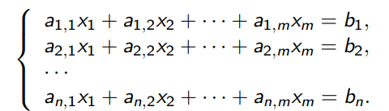

5. Однородные системы линейных уравнений
Определения
Пусть K - поле, \(a_{i,j} \in K\) (где \(i \in {1, \dotsc, n}, j \in {1, \dotsc, m}\)), \(b_1, \dotsc, b_n \in K\). Пусть \(x_1, \dotsc, x_m\) - неизвестные. Тогда Система линейных уравнений (далее СЛУ) - это  СЛУ называется однородной (далее ОСЛУ), если \(b_1 = \dotsc = b_n = 0\).
Элементраные преобразования СЛУ
- Поменять местами два уравнения.
- К одному уравнению прибавить другое, умноженное на \(\lambda \in K\)
- Умножить уравнение на \(\lambda \in K\), отличное от 0
- Везде умножение уравнения на число происходит вместе с правой частью
Определения
ОСЛУ приведена к ступенчатому виду, если каждое уравнение, имеющее ненулевые коэффициенты, имеет вид $$x_{s_i} + c_{i,s_i+1}x_{s_i+1} + \dotsc + c_{m,k}x_m = 0,$$ причем \(s_1 < s_2 < \dotsc < s_k\) (где k — наибольший номер уравнения, имеющего ненулевые коэффициенты).
Лемма 2
- Элементарные преобразования всех трех типов обратимы, то есть имеют обратные элементарные преобразования.
- Элементарные преобразования не меняют решений СЛУ.
Доказательство
-
- Элементарное преобразование типа (1) само себе обратно.
- Рассмотрим элементарное преобразование типа (2), пусть мы к i-му уравнению прибавили j-е, умноженное на \(\lambda\)
- Тогда обратное преобразование - прибавить к i-му уравнению j-е уравнение, умноженное на \(- \lambda \)
- Наконец, обратное преобразование к умножению уравнения на \(\lambda \ne 0\) - умножить его же на \(\lambda^{-1}\)
-
- Очевидно, элементарное преобразование системы оставляет все ее решения (все уравнения останутся верными)
- Так как такое преобразование обратимо, добавиться новые решения не могут - иначе проведем обратное преобразование, и все новые решения сохранятся.
Лемма 3
ОСЛУ можно привести элементарными преобразованиями к ступенчатому виду.
Доказательство
- Индукция по количеству неизвестных. База для одного неизвестного очевидна — наша система имеет вид \(ax_1 = 0\).
- Если \(a \ne 0\), то на a можно поделить и получить \(x_1 = 0\). Если же a = 0, система уже имеет ступенчатый вид Переход \
- Если все коэффициенты при \(x_1\) равны 0, то достаточно привести к ступенчатому виду систему без \(x_1\), что можно сделать по индукционному предположению.
- Если не все коэффициенты \(a_{i,1}\) равны 0, то переставим уравнения (с помощью элементарных преобразований типа (1)) так, чтобы \(a_{1,1} \ne 0\), после чего поделим первое уравнение на \(a_{1,1}\) — оно примет нужный нам вид \(x_1 + c_{1,2}x_2 + \dotsc + c_{1,m}x_m = 0\).
- Теперь для всех \(k \in {2, \dotsc, n} \) } вычтем из k уравнения новое первое уравнение, умноженное на \(a_{k,1}\) — во всех уравнениях, кроме первого, исчезнет переменная \(x_1\).
- Далее останется применить к системе из всех уравнений, кроме первого, индукционное предположение.
Лемма 4
ОСЛУ, в которой неизвестных больше, чем уравнений, имеет нетривиальное решение (не все \(x_i\) равны 0).
Доказательство
- Приведем систему к ступенчатому виду.
- Будем считать, что обозначения как в определении. Пусть осталось k уравнений с ненулевыми коэффициентами. Тогда \(s_1 < s_2 < \dotsc < s_k\) — не более чем n < m номеров переменных.
- Остались переменные с номерами не из \({s_1, \dotsc ,s_k}\). Положим все их равными 1.
- После чего последовательно вычислим: сначала \(x_{s_k}\), потом \(x_{s_{k−1}}\), и так далее, \(x_{s_1}\).
- Переменную \(x_{s_i}\) мы вычисляем из i уравнения: $$ x_{s_i} = −(c_{i,s_i+1}x_{s_i+1} + \dotsc + c_{i,m}x_m),$$ все значения в правой части уже известны.